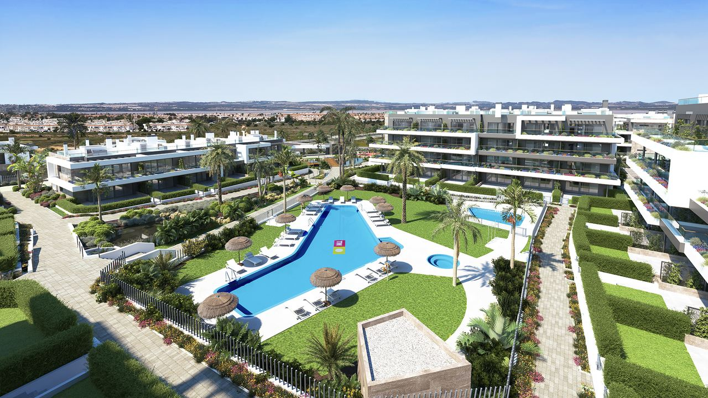
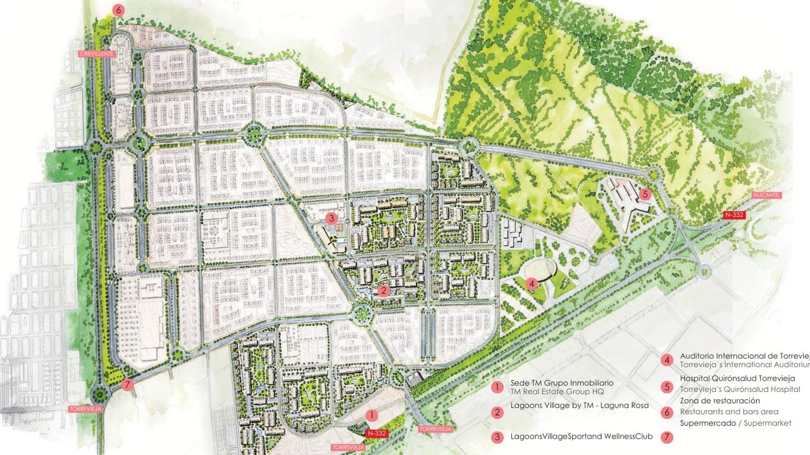
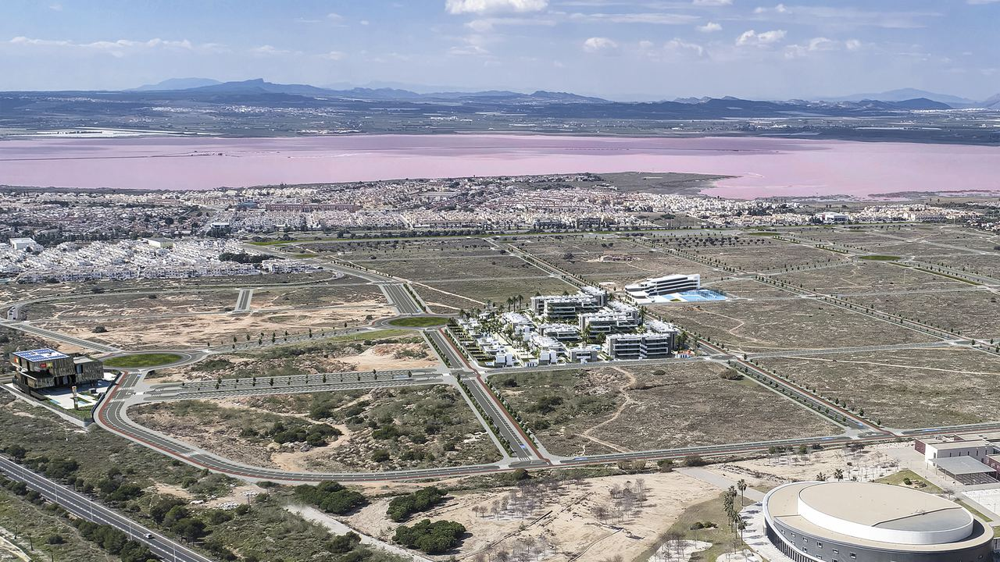
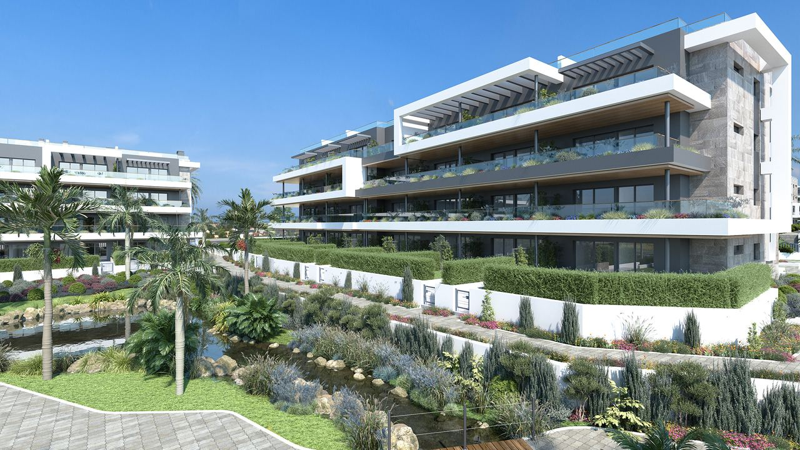
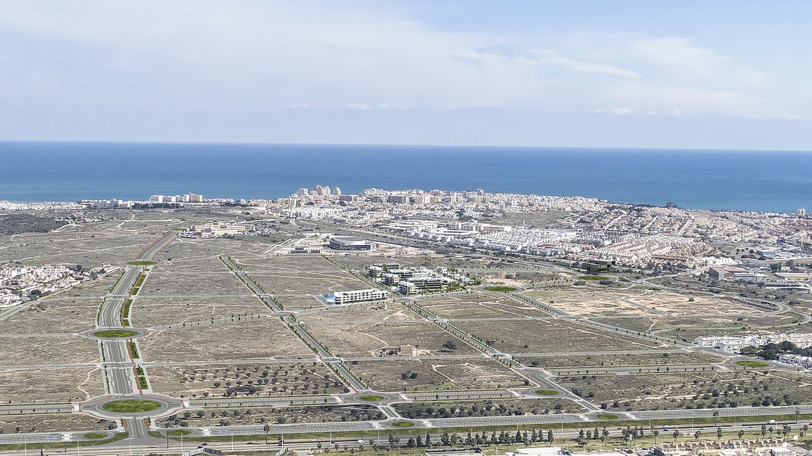

Obra nueva · Torrevieja
La Hoya, Torrevieja: guía de Lagoons Village
 Por Lucyna Gacek · · actualizado · 3 min de lectura
Por Lucyna Gacek · · actualizado · 3 min de lectura

En resumen: La Hoya es la mayor zona residencial nueva de Torrevieja: casi 2 millones de m² entre la laguna rosa, el parque natural de La Mata y el mar, construida desde cero con un único plan urbanístico, edificios bajos, calles anchas y muchas zonas verdes. En su centro, TM Grupo Inmobiliario construye Lagoons Village: unas 1.800 viviendas en 264.000 m² y 11 fases, desde pisos y bungalows hasta chalets, con un club deportivo y de bienestar privado para propietarios. La playa de La Mata, el centro comercial Habaneras y el hospital Quirónsalud están a pocos minutos. Encaja con quien busca una vivienda moderna para todo el año y no le importa comprar en un barrio todavía en construcción.
Torrevieja creció deprisa y no siempre con orden. La Hoya es distinta: un barrio entero diseñado de una vez. Esto es lo que es, lo que ofrece Lagoons Village y lo que conviene valorar si piensa comprar allí.
La Hoya: un barrio nuevo con un solo plan

La Hoya se considera la mayor bolsa de suelo urbanizable de la provincia de Alicante, con casi dos millones de metros cuadrados al norte de Torrevieja. Al construirse desde cero con un único plan parcial, tiene edificios más bajos, calles más anchas, infraestructuras modernas y muchas más zonas verdes que los barrios antiguos. Varias promotoras tienen licencias en el sector, y La Hoya crecerá durante años hasta ser un barrio de varios miles de viviendas.
Ubicación: entre las lagunas y el mar

- Junto al Parque Natural de las Lagunas de La Mata y Torrevieja y la famosa laguna rosa, con rutas a pie y en bicicleta.
- A pocos minutos de la playa de La Mata, el centro comercial Habaneras y el hospital privado Quirónsalud Torrevieja.
- A unos 45 minutos en coche del aeropuerto de Alicante-Elche y unos 50 del de Murcia.
Las lagunas saladas dan a la zona un microclima seco y suave que mucha gente considera saludable. Más sobre la zona en ¿Costa Blanca o Costa del Sol?.
Lagoons Village by TM
En el centro de La Hoya, TM Grupo Inmobiliario, promotora con décadas de experiencia en la Costa Blanca, construye Lagoons Village. Al lanzar el proyecto en 2024, TM anunció unas 1.800 viviendas en 264.000 m², en 11 fases, con una inversión de unos 375 millones de euros. TM ejecuta además viales, avenidas, zonas verdes y el centro deportivo para propietarios.
El proyecto se plantea como un barrio completo y no como un simple residencial, para quien vive aquí todo el año, pasa largos inviernos o lo usa como segunda residencia.
El club deportivo y de bienestar para propietarios
El Lagoons Village Sport & Wellness Club es exclusivo para propietarios. Está previsto que incluya:
- piscinas climatizadas para adultos y niños, en parte con energía solar, y una gran zona de piscina tipo playa,
- gimnasios interior y exterior,
- pistas de tenis y pádel, campo de fútbol y minipista de baloncesto,
- zonas infantiles, coworking, spa y salas de tratamiento,
- carriles bici, también hacia la playa de La Mata, autobús lanzadera a la playa y seguridad privada.
Unas instalaciones así son poco habituales en la Costa Blanca, pero se reflejan en la cuota de comunidad. Pida la cuota prevista para cada tipo de vivienda antes de reservar.
Las viviendas

Lagoons Village ofrece pisos, bungalows, pareados y chalets independientes, sobre todo de 1 a 3 dormitorios. Los diseños tienen grandes ventanales, cocinas abiertas y mucho espacio exterior: jardines, terrazas y solárium. Las viviendas tienen doble orientación para ventilación cruzada, aerotermia para agua caliente y climatización, y el paisajismo usa plantas autóctonas de bajo consumo de agua. Cada vivienda tiene previsto garaje y trastero.
Qué tener en cuenta antes de comprar
- Un barrio en marcha: La Hoya será una zona en obras durante años. Compruebe qué fases y servicios estarán terminados cuando se mude.
- Protección sobre plano: cada pago antes de la entrega debe estar avalado. Vea obra nueva o segunda mano.
- Gastos: pida la cuota de comunidad, que incluirá el club y la seguridad.
- Alquiler: si piensa en alquiler vacacional, revise los estatutos y el registro turístico autonómico. Vea alquileres de corta duración.
- Valor a largo plazo: los barrios nuevos bien planificados suelen mantener mejor su atractivo que las zonas antiguas difíciles de modernizar, y la nueva oferta de Torrevieja se concentra aquí.
Preguntas frecuentes
¿Dónde está La Hoya en Torrevieja?
Al norte de la ciudad, entre la laguna rosa, el parque natural de La Mata y el mar, a pocos minutos de la playa de La Mata y del centro comercial Habaneras.
¿Qué tamaño tiene Lagoons Village?
TM Grupo Inmobiliario prevé unas 1.800 viviendas en 264.000 m², construidas en 11 fases.
¿Qué tipos de vivienda hay?
Pisos, bungalows, pareados y chalets independientes, sobre todo de 1 a 3 dormitorios, con jardín, terraza o solárium.
¿El club deportivo está abierto al público?
No. Está previsto solo para propietarios de Lagoons Village, y su coste se refleja en la cuota de comunidad.
¿A qué distancia está el aeropuerto?
A unos 45 minutos en coche del aeropuerto de Alicante-Elche y unos 50 del de Murcia.
¿Le interesa La Hoya?

Le enviamos las fases actuales, planos, precios y planes de pago de Lagoons Village y otras promociones de La Hoya, y organizamos una visita. Contacte con nosotros.
Fuentes: TM Grupo Inmobiliario – launch of Lagoons Village by TM (2024)